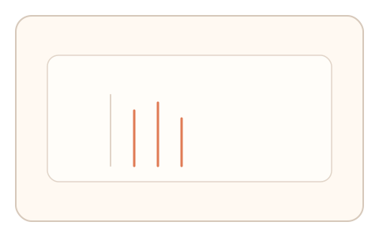
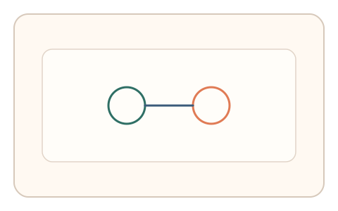

#170
Reverse Brainstorming - Round 3
已扩展
真实硬件时序指纹
采集高频输入事件抖动与合并模式，与设备基线比对。
概念原文
采集高频输入事件的时序抖动与合并特征，并与设备基线对比。
低成本模拟器很难复刻真实硬件/OS 事件管线的时序特征。
研究背景
真实硬件与操作系统事件管线存在稳定抖动与合并节律。自动化脚本难以精确复刻时序指纹。
核心机制
- 高频采集输入事件时间戳。
- 提取事件抖动与合并模式。
- 分析指针加速度噪声。
- 与设备基线分布比对。
用户流程
- 步骤 1：用户完成短交互序列。
- 步骤 2：系统采集原生事件时序。
- 步骤 3：系统匹配设备基线并判定。
判定信号
事件间隔抖动
硬件管线产生稳定抖动结构。
合并事件节律
事件合并模式反映真实设备特性。
判定逻辑
时序指纹需与设备基线一致；过度规则或异常合并判异常。
对抗面
- 脚本伪造固定间隔事件
- 模拟器生成伪随机时序
防御与缓解
- 高分辨率计时与多维统计
- 与轨迹噪声信号耦合
- 设备基线动态更新
可达性与风险
不要求精细操作，仅需短交互采集。
- 系统级平滑影响时序特征
- 低采样率设备降低判别力
可视化状态

状态 1：事件采集
高频事件时间序列。

状态 2：抖动分析
提取抖动与合并节律。

状态 3：基线匹配
与设备基线分布比对。
参考资料
Jitter
说明时序抖动特征。
Input method
说明输入事件与设备差异。